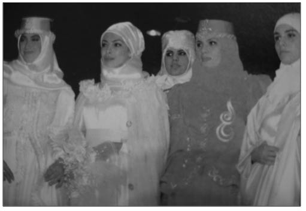

T
Tabu Yıkan Reklam (Reklamcılıkta devrim): 1994’te bir bankanın reklam filminde “Bay Pardon” olarak ünlenen tiyatrocu Kaan Girgin, sonraki reklam filminde izleyicilerin karşısına asker olarak çıktı. Asker imajı reklamlarda ilk kez işlenirken, yönetmenliğini ve senaristliğini Ali Taran’ın yaptığı bu reklam filmiyle Türkiye’de tabu olan bir konu yıkılmış oldu.
Tahkim Yasası (Yabancı hakem): Uluslararası Tah-kim’in yolunu açan ve bu yüzden uzun süren tartışmalara neden olan anayasa değişikliği teklifi, Meclis’te 1999’da rekor oyla kabul edildi. Tahkim ve özelleştirmeyi öngören bu değişiklikle artık Türkiye’de yatırım yapacak olan yabancılarla, devlet arasında yapılacak imtiyazlı şartname ve sözleşmelerde itilaf çıkması hâlinde, sorunu iki tarafın birlikte belirleyeceği “yabancı hakem”in çözmesi kararlaştırıldı.
Tasarruf Kutuları (Kumbara): Eldeki bütün imkânlar seferber edilerek, yokluklar içinden bir ülke kurulmuştu. Toplu iğneyi bile dışardan satın alan bir milletin kalkınması için belki de tasarruf etmekten başka çare yoktu. Tasarruf kutuları yani “kumbara”, bu dönemde İş Banka-sı’nın tasarrufu teşvik amacıyla attığı en önemli adımdı. 1928 yılı başında ülkedeki tüm yerli ve yabancı bankaların tasarruf hesapları ve bu hesaplara uyguladıkları faiz oranları konusunda kapsamlı bir çalışma yapan İş Bankası yönetimi, eylül ayından itibaren İstanbul şubesi vasıtasıyla bir kampanya düzenlemeye karar verdi. Hedef, tasarruf sandığı mevduatını 10 milyon liraya çıkarmaktı ve bunun için öncelik geleceğin büyükleri olan çocuklara verilecekti. Çocuklara tasarrufu aşılamanın en kolay yolu da Batı’da olduğu gibi kumbara dağıtmaktı. Bu nedenle banka yönetimi, ilk iş olarak Avrupa’ya kumbara siparişi verdi. Kumbaralar gelir gelmez büyük bir rağbet gördü. Her gün yüzlerce kişi “tasarruf kutusu” almak için şubelere başvuruyordu. Kumbara isteyenlerin büyük bölümü öğrencilerden, çocuğunu sevindirmek isteyen babalardan ve işçilerden oluşuyordu. Kumbaralar kısa sürede tükendi. Her gün şubelerden gelen kumbara talepleri karşısında, Avrupa’dan sipariş edilen kumbaraların acele gönderilmesi istendi. Dağıtılan kumbara sayısı 1930’da 16 bini buldu. 1934’te ise dağıtılan ve hesapları açılan kumbara sayısı 50 bine ulaştı. Cumhuriyet’in ilk yılları boyunca bankalar mevduatlara faiz vermek yerine yaptıkları çekilişlerle hesap sahiplerine ikramiye dağıttılar. Bankada kumbara hesabı açtıranlar tasarruf etmekle kalmayıp kura sonucu kazanacakları servetin hayalini kuruyorlardı. 1930’un son aylarına doğru yapılan İş Bankası’nın ikinci kurasının ödülü 1.000 liraydı.
Televole İktisatçı (Adını magazin programından alan ekonomi kavramı): Öncelikle Televole’nin ne olduğu konusunda kısa bir bilgi verelim. 2002’nin son aylarında MİT Müsteşarı Şenkal Atasagun’un “Televole” tarzı eğlence programlarına yönelik yaptığı eleştiri, gazete manşetlerine “Televole komünist yapar mı?” şeklinde yansıdı. Atasagun’un, “Bırakın doğuyu... Varsayalım, Ankara’nın varoşlarında yaşayan, altı çocuğu olan ve akşam evine ekmek götüremeyen birisiniz. Akşam televizyonunuzu açtığınızda Televole programlarında 60 kişinin nasıl yaşadığını görüyorsunuz. Siz olsanız ne düşünürsünüz? Ben bu durumda olsam, belki de komünist olurdum” sözleri, medyadaki aşırı magazinleşmenin toplumsal sonuçlarını da tartışma gündemine taşıdı. Hatta yaşanan ekonomik krizin sebebi olarak da gösterildi. MİT Müsteşarı’nın bu açıklamasıyla spor ve magazinin birlikte harmanlandığı Televole programları, televizyonlardaki çarpık magazinleşme anlayışının sembolü hâline geldi. İlk yapılmaya başlandığı 1990’lı yıllardan itibaren sayıları hızla artan Tele-vole tarzı programlar, kendi kültürlerini de yaratmakta gecikmedi. Uzmanlara göre Televole kültürü, toplumun en kolay yoldan benimseyeceği, en ucuz ve en yoz öğelerin paketlenerek insanlara verilme çabasıydı. Ekonomik krizden sonra iktisatçılar kelimesiyle yan yana gelmesiyle birlikte Televole kavramı yeni bir hâl aldı: Televole İktisatçıları. Bu yeni deyim genel olarak her gün televizyona çıkıp, Türkiye’nin durumunu güllük gülistanlık gösteren iktisatçılar için kullanılmaya başlandı.
Tesettür Modası (İslami moda türü ): 1980’lerden sonra belirgin bir şekilde siyasallaşan ve popülerleşen İsla-mi akımın etkisi, 1990’larda giyim-kuşam kültürüne de yansıdı. Siyasetteki bütün çalkantılara rağmen İslami yaşam tarzı kendi giyim sektörünü de yaratmakta gecikmedi. Tesettür firmalarının ilki Tekbir Giyim firmasıydı. 1982 yılında tesettür giyimi imalâtına başlayan ve 1990 yılında Tekbir Giyim Anonim Şirketi’ni kuran Karaduman kardeşlerden Mustafa Karaduman, Aksiyon dergisine verdiği röportajda, “Bu alandaki boşluğu doldurmak” amacıyla tesettür giyim işine girdiklerini açıklıyordu:
“1980’li yıllarda mağazalarda gerçekten tesettüre uygun kıyafet bulmak mümkün değildi. Bulunan birkaç mağaza ise küçük çapta perakende iş yapıyorlardı. O dönemde sadece Mesture Giyim ve Altıniğne gibi birkaç firma bu alana yatırım yapmıştı. Biz bu tesettür olayının yüzde 98’i Müslüman bir ülkede bütün insanlarımızı ilgilendirdiğini düşündük ve bu alandaki boşluğu doldurmak istedik. Bizim insanımız yaşasa da yaşamasa da İslam’a gönülden inanıyor. Bu insanlara İslam’ın emrettiği tesettürün tanıtılması hâlinde sıcak bakacaklarını düşünerek bu işe girdik. O yıllarda tesettür kelimesi de tam bilinmiyordu. Sanki Arap kıyafetiymiş gibi düşünülüyordu.” (Aksiyon, 24.07.2000)
1990’lı yıllarda Tekbir Giyim, ürünlerini daha geniş kitlelere tanıtabilmek arayışına girmişti. Bunun için önce bu konuda herkesin tanıyıp değer verdiği din adamlarıyla görüşüp üretilmesi ve satılması helâl olan bir şeyin tanıtılmasının da helâl olduğu yönünde fetva almışlardı. Firma 1992 yılında Türkiye ve dünyada ilk defa “tesettür defilesi” düzenleyerek Türk ve Avrupa medyasının ilgi odağı hâline geldi. İlk defile 1992’de Beyazıt’taki President Otel’de düzenlendi. Ülkede düzenlenen ilk tesettür defilesine Türkiye’nin tanınmış mankenleri katıldı. Ancak gün geldi, kendi hayatında da tesettürlü yaşam tarzını benimsemiş mankenler çıkmaya başladı. Bu mankenlerden ilki Amina Muzur’du. Kendisi, Türkiye’nin ilk tesettürlü mankeniydi. 1992’de patlak veren ve Sırplar tarafından gerçekleştirilen Boşnak katliamından kaçan Amina Muzur Türkiye’ye sığınmış ve daha sonra mankenliğe başlamıştı. Mu-zur, ilk tesettürlü manken olarak, diğer mankenlerin vücutlarını, kendisinin ise elbiseleri sergilediğini düşünüyordu. Tekbir firmasının mankeni olan Bosnalı Amina Munzur evlenince katalog çekimlerini bıraktı.

Siyasallaşan ve popülerleşen İslami akımın etkisi, 1990’larda giyim-kuşam kültürüne de yansıdı. Siyasetteki bütün çalkantılara rağmen İslami yaşam tarzı kendi giyim sektörünü de yaratmakta gecikmedi.
Titan Saadet Zinciri (Titan Kenan’ın sistemli dolandırıcılığı:): Türkiye’nin skandallar ansiklopedisinin en önemli maddelerinden biri olarak, Titan’ı ayrı bir şekilde değerlendirmek gerekir. Almanya’da kuaförlük yapan Hakan Kenan Şeranoğlu ve arkadaşları, Titan adını verdikleri sistem sayesinde kendilerine 75 milyon marklık bir kaynak yaratmışlardı. Kurdukları bu saadet zincirinin işleyişi basitti. Titan toplantılarına davetle gidiliyordu. Ayrıca toplantılar hakkında kimseyle konuşmayacağınızı aksi takdirde 5 bin mark ceza ödemeyi kabul ettiğinizi belirten bir gizlilik belgesini imzalıyordunuz. Titan’a girişin bedeli ise 2 bin 450 marktı. İlk iki üyeyi götüren kişi lider konumuna yükseliyor ve götürdüğü üyelerden 300’er mark alıyordu. Üçüncü kişiyi sisteme üye yaptırdığında ise grup lideri 1000 mark kazanıyordu. Ayrıca liderin getirdiği her üye için 700 mark alınıyordu. Yatırılan paranın 50 markı Titan’a gidiyordu. Kısa sürede 30 bin üyeye ulaşan saadet zinciri sayesinde Şeranoğlu yarattığı muazzam kaynağın bir kısmını Lamborghini, Ferrari, Mercedes ve BMW gibi lüks araçlara yatırmıştı.
Saadet Zinciri, Şeranoğlu’nun İzmir’de gerçekleştirdiği gösterişli doğum gününün basına yansımasıyla kırılmaya başlandı. 1998’de İzmir Hilton Oteli’nde görkemli bir parti oldu. Şeranoğlu elinde şampanya kadehi, ilginç ceketi, dans figürleri ve araba şeklindeki pastasıyla çok konuşuldu. Pastayı kesmek için kullanılan samuray kılıcından şüphelenen polisin yaptığı baskında yakalanan ve kılıcın kaçak olması nedeniyle gözaltına alınan Şeranoğlu’nun Titan zinciri böylelikle açığa çıktı. Absürd doğum günü partisi kamuoyu baskısına dönüşünce Titancılar hâkim karşısına çıkarıldı. Şeranoğlu ve arkadaşları, 143 kişiyi dolandırmak suçundan 25’er yıl hapis cezasına çarptırıldı. Şeranoğlu, 140 kilo olarak girdiği cezaevinden 10 yıl sonra 70 kilo olarak çıktı.
Toprak İşleyenin, Su Kullananın (Türkiye’de dönüşüm yaratacak, hayata geçirilememiş bir proje):
Türkiye’nin 1960 ve 1970’lerdeki en önemli sorunu toprak meselesiydi. Doğan Avcıoğlu gibi yazarlar, Kemalist devrimin en büyük eksiğinin bu olduğunu belirtiyorlardı. Çiftçiyi Topraklandırma Kanunu ve Köy Enstitüleri’ni içeren süreç başarısızlıkla sonuçlanmıştı. Türkiye ne toprak reformunu ne de tarım reformunu gerçekleştirebilmişti. İşte böyle bir ortamda siyasi yolculuğa başlayan Bülent Ece-vit’in, “Toprak İşleyenin, Su Kullananın” sözü kendisine iktidar yolunu açan sloganlardan biri oldu. Ecevit, bu sözü 11 Ağustos 1969’da CHP Genel Sekreteri olarak parti programının bir bölümünü açıklarken kullandı. 1973 Se-çimleri’nde CHP, aynı söylemle vatandaşlara seslendi ve parti bu sloganla seçim meydanlarına damgasını vurdu. Böylece kendisini ortanın solu olarak tanımlayan parti, o dönemde yüzde 33 oyla iktidar oldu. Bülent Ecevit, CHP-MSP koalisyonunun başbakanı olarak iktidara geldikten sonra toprak ağalığına son vermek amacıyla başlattığı toprak reformu için yine aynı sloganı kullandı. Bu düşüncenin hayata geçirilmesi için de, bir model olarak Köykent Projesi’ni öne sürdü. Köykent Projesi de tıpkı Köy Enstitüleri gibi köylüyü köyde tutmak ve onu kente, göçe bulaştırmamak amacını taşıyordu.
Türk Parasının Kıymetinin Korunması (Paranın değerini korumaya yönelik bir kanun): Türkiye, 1929’a büyük beklentilerle girmişti. Lozan Anlaşması’ndan doğan zorunlu ticaret rejiminin ortadan kalkmasıyla iktisadi bağımsızlığa kavuşmaya hazırlanıyordu. Ancak yaşananlar, Türkiye’nin hevesini kursağında bıraktı. 1929 hem dünya ekonomisi hem de Türkiye açısından beklenmedik bir iktisadi krizin oluştuğu ve hızla tüm dünya ülkelerini etkisi altına aldığı bir yıl oldu. 1920’lerin sonunda ellerinde Türk parası bulunduranların çoğu, Lozan Anlaşması’nın kısıtlayıcı maddeleri yürürlükten kaldırıldığında uygulamaya konması beklenen ticari kısıtlamalara, sermaye denetimlerine karşı kendilerini korumaya çalışıyorlardı. Bu da ithal mallarında ve döviz kaynaklarında büyük bir spekülasyon anlamına geliyordu. Bu spekülasyon ödemeler dengesinde zaten varolan güçlükleri iyice ağırlaştırdı ve Türk lirasının değeri üzerindeki baskıyı daha da belirgin hâle getirdi. Böylece Dünya Krizi’nin etkileri henüz başka yerlerde hissedilmeye başlamadan Türk ekonomisi bir kriz dönemine girdi. Bu durumda hükümet ekonomi cephesinde çıkardığı iki yasayı bir yıl arayla yürürlüğe koydu. Bunlar, Menkul Kıymetler ve Kambiyo Borsaları Kanunu ile 1930’da yürürlüğe giren 1567 sayılı Türk Parasının Kıymetini Koruma Hakkındaki Kanun’dur.
Türk Parasının Kıymetini Koruma Kanunu’ndaki ilk değişiklik yabancı sermaye konusunda oldu. Yabancı sermayeyi davete ilişkin ilk adım, Maliye Bakanı H. Nazmi Keşmir’in önerisiyle, Türk Parası Kıymetini Koruma Yasası çerçevesinde çıkarılan 22.05.1947 tarih ve 13 sayılı Bakanlar Kurulu kararıyla atıldı. 13 sayılı kararname yabancı sermayeye ilişkin ilk açık düzenleme olarak dikkat çeker. Kararnameyle, Türkiye’de iş yapmak isteyen yabancıların gerekli nakdi sermayeyi ve işletme akçelerini döviz olarak dışarıdan getirmeleri zorunluluğu konuldu. Bu kararla Maliye Bakanı, yabancı sermayeye kâr transferi konusunda taahhütte bulunma yetkisine sahip oldu. 1990’lı yılların başında yapılan değişikliklerle son hâlini alan kanun yaklaşık 80 yıldır yürürlükte.
Türk Parasının Konvertibil Oluşu (ANAP iktidarının kurumsal alandaki en önemli reformu):
Anavatan hükümeti 1989’da bir Bakanlar Kurulu kararıyla Türk Parasını Koruma Kanunu’nunda reform sayılacak bir değişiklik yaptı. 32 Sayılı Kararname’yle bütün mali sektör dış rekabete açıldı. Bu uygulamayla içeride serbest şekilde döviz alım-satımı başladı ve her çeşit yabancı sermayenin Türk mali piyasalarına giriş ve çıkışının önündeki tüm engeller kaldırıldı. Bu değişimle birlikte Türk lirası konvertibil kılındı, portföy yatırımlarına yönelik olarak yabancı sermaye hareketleri büyük bir canlılık kazandı. Cumhuriyet dönemi iktisat politikalarının sembolü sayılan bu yasanın değiştirilmesiyle, dış dünyayla Türkiye arasındaki sermaye hareketleri serbest bırakılıyor ve ekonomik anlayıştaki değişimin altı çiziliyordu. Kanunda yapılan bu değişiklikle, Türkiye bir anlamda küreselleşme kavramıyla ifade edilen uluslararası ekonomik sürece de dâhil edilmiş oldu.
Türkbank İhalesi: (Bkz.Vücut Kimyasının Bozulması).
Türkiye Tarımda Kendine Yeten Yedi Ülkeden Biridir (Bu ülkelerin hangileri olduğunun bir türlü öğrenilmediği, geçmiş yıllara ait bir iktisat efsanesi): Bu söz tam bir şehir efsanesi gibi bir şeydi. İlkokul sıralarından beri öğrencilere Türkiye’nin tarımdaki durumunun bu olduğu söyleniyordu. Ayrıca bu yedi ülkenin hangileri olduğu da bir türlü bilinemiyordu. Zaman geçtikçe kapalı ekonomiler için geçerli olan bu kuralın çok da gerçeği yansıtmadığı anlaşıldı. Çünkü kendi kendine yetmenin ölçüsü yoktur. Ayrıca Türkiye hiçbir zaman objektif tanımlamayla tarımda kendine yeterli olan bir ülke olamadı. Mutlak bir ölçü olamaz bu konuda. Hangi üründen, ne kadar tüketirseniz kendi kendinize yeterli olursunuz? Doymanın ölçüsü nedir? Sınırlarınızı kapatarak, bütün ürettiklerinizi sadece tükettiğinizde mi, kendi kendinize yeterli oluyorsunuz? Bu nedenle önemli olan, Türkiye’nin kaynaklarının doğru kullanılması, değerlendirilmesidir. Kırsal kesimde kentlere yönelen göçle beraber, tarımda çalışan aktif nüfus yerini yaşlı kesime bıraktı. Böylelikle önemli bir nüfus tarımsal üretimden elini çekince, Türkiye’nin tarımda kendine yeten yedi ülkeden biri olmadığı gerçeği de ortaya çıktı.
Türkiye’nin İlk Milyoneri (Türkiye dünyanın uçak üretim ve ihraç lisansına sahip 5. ülkesi iken bunu sağlayan Nuri Demirağ’a hayatı zindan edildi): Cumhuriyet döneminin ilk Türk demiryolu müteahhitlerinden biri olan Nuri Demirağ, Türkiye’nin en önemli müteşebbisi ve ilk milyoneriydi. Girişimleri sadece ekonomiyle sınırlı kalmayan Demirağ, Türkiye’de girişimciliğin tarihsel gelişimi içinde renkli bir sima oluşturdu. Mütareke yıllarında devletteki görevinden istifa ederek ticaret hayatına atılan Nuri Demirağ, ürettiği “Türk Zaferi” adlı sigara kâğıdıyla kısa sürede oldukça büyük bir servet edindi. Sigara kâğıdı üretimi İnhisarlar İdaresi’ne verilince (1925), bir ithalat ve ihracat bürosu kurdu. Bir süre sonra bu büroyu kapatıp yüksek mühendis olan kardeşi Abdur-rahman Nuri Demirağ ile birlikte müteahhitliğe başladı. Karabük Demir Çelik Tesisleri (1930), İzmit Kâğıt Fabrikası, Bursa Merinos Fabrikası, Sivas-Erzurum demiryolu hattı (1938-1939) projelerini gerçekleştirdi. Devlet bütçesinin 212 milyon lira olduğu 1936’da 11 milyon liralık sermayesiyle Türkiye’nin en büyük kişisel servetine sahipti. Nuri Demirağ, Cumhuriyet’in ilk yıllarında müteahhitlik işlerinin özel kesimde sermaye birikiminin oluşumundaki rolünü göstermesi açısından önemli bir örnektir. Bu birikimlerle yola çıkan Demirağ, özel kesimin önemli girişimcileri arasına katıldı. Demirağ’ın, başarısız veya sonuçsuz kalmış da olsa Türk girişimcilik tarihi açısından ilginç girişimleri de oldu. Kişisel çabalarıyla İstanbul Yeşilköy’de ilk büyük havaalanını yaptı, aynı yerde bir uçak fabrikası ve pilot okulu kurdu.
1943’de Türk Hava Kurumu’nun sipariş ettiği uçakların bedellerini ödememesi, Beşiktaş’taki montaj atölyesinde yapılan 160 beygir gücünde, çift motorlu 6 kişilik yolcu uçaklarına da Türk Hava Yolları’nın ilgi göstermemesi sonucu doğan krizler ve yıllarca süren davalar Demirağ’ın yaşamının dönüm noktalarını oluşturdu. Demirağ iflasa sürüklenmesinin ülke açısından ciddi zararlara yol açacağını belirttiği mektupları Millî Şef İsmet İnönü’ye gönderse de olumlu sonuçlar alamadı. 1945’te Millî Kalkınma Partisi’ni kurdu. Parti seçimlerde başarılı olamadı ve giderek etkinliğini yitirdi.